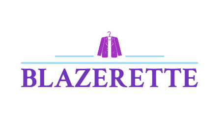

Awards
Winner of the Craft and Italian Artisanship Award
CNMI Sustainable Fashion Awards 2022
Kering Award for Sustainable Fashion 2022
Here at Blazerette, we strive to create affordable, sustainable clothing for all body types.
How do we do it? We collect all of our fabric second-hand, so every item is unique, sustainable, and stylish!
Our goals for the future
We hope to expand our business by investing in fabrics made from recycled material and more production space.
Sustainability is expensive. In order to make our products as affordable as possible, we use second-hand fabrics.
We strive for size inclusivity and currently offer size XS-4XL
